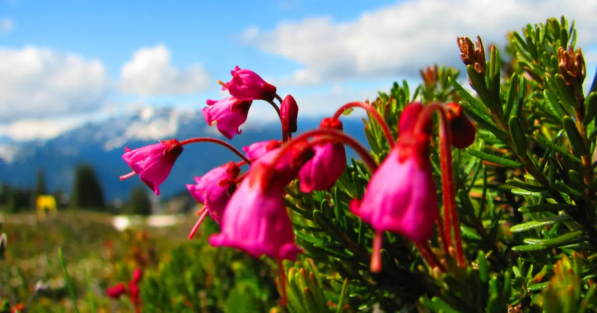

Lake Louise en novembre et décembre : guide du ski en début de saison
Lake Louise, dans le parc national de Banff, est l'un des premiers grands domaines du Canada à démarrer chaque hiver, et depuis des décennies il ouvre la saison de vitesse de la Coupe du monde. Les séjours de début de saison tentent : moins de monde, neige froide, grands panoramas. Ils demandent aussi un autre état d'esprit. Voici ce qui vous attend en novembre et décembre, avec notre historique de neige (un modèle de 46 hivers passés, pas les bulletins de la station) comme guide.
Consultez les prévisions neige en temps réel pour Lake Louise Ski Area sur l'application SnowScopeHauteurs de neige, alertes poudreuse et carte 3D, gratuitement.
Pourquoi Lake Louise démarre tôt
La station accueille les descentes et super-G d'ouverture de la Coupe du monde FIS de ski alpin, le seul lieu du Canada où elles ont lieu. Les courses ont commencé en 1980 et se sont tenues chaque année de 1993 à 2020. Des courses de vitesse précoces exigent une neige précoce et fiable et du froid : c'est la réputation de cette montagne. Pour 2026-27, le forfait saison de la station est valable du 6 novembre 2026 au 2 mai 2027 (dates du forfait, pas une garantie d'ouverture), des remontées de 9 h 30 à 16 h 30, et davantage de neige de culture sur Richardson's Ridge.

À quoi ressemble la neige de novembre
Dans notre modèle, la neige arrive tôt : la première atteint en général la mi-pente vers le 23 septembre et le bas vers le 2 octobre. En novembre, un hiver typique compte environ 40 cm au sol. L'écart est l'essentiel : un hiver sur 10, il n'y a qu'environ 19 cm, et dans le dixième le plus enneigé environ 66 cm. Autrement dit, novembre peut vouloir dire quelques pistes damées sur une base mince, ou un vrai hiver précoce. La neige de culture fait une grande partie du travail les premières semaines.
Décembre : la base se construit
C'est en décembre que le début de saison devient l'hiver. Un décembre typique compte environ 73 cm, environ 44 cm une année maigre et environ 100 cm une année généreuse. Janvier suit avec environ 89 cm, et le maximum habituel de la saison, environ 120 cm, arrive en mars. Au moins 50 cm restent au sol pendant 19 semaines neuf hivers sur 10. Une remarque sur nos chiffres : ici, nos trois altitudes donnent presque les mêmes valeurs, car notre modèle des hivers passés voit le domaine comme une seule zone de neige ; lisez-les comme la neige du domaine, pas d'une piste.
Comment skier en début de saison
Restez sur les pistes damées signalées ouvertes, et attendez-vous à une neige dure et rapide le matin. Une couche mince cache pierres et souches : le hors-piste et les sous-bois sont une mauvaise idée avant que la base ne soit faite. Prenez de vieux skis ou des skis de location si vous craignez pour vos carres. Les journées de novembre sont courtes et froides : une couche chaude et une protection du visage font la différence.
Une série qui a grandi
Lake Louise a gagné de la neige dans notre série. Le maximum médian était d'environ 113 cm sur nos quinze premiers hivers et d'environ 131 cm sur les quinze derniers. L'hiver dernier, 2025-26, a été le plus enneigé des 46, avec un maximum d'environ 164 cm. Un séjour précoce reste un pari sur la météo, mais les hivers récents l'ont plus souvent récompensé.
Y aller
Le domaine est à environ 57 km à l'ouest de Banff, dans le parc national, et sa plus longue piste mesure 8 km. Les règles du parc s'appliquent, la faune est prioritaire sur les routes, et l'arrière-pays autour de la station est un vrai terrain d'avalanche : lisez le bulletin d'Avalanche Canada pour Banff, Yoho et Kootenay avant de quitter le domaine.
Conseils aux skieurs
- Novembre : attendez-vous à quelques pistes damées sur une base mince, surtout en neige de culture.
- À partir de décembre : la base se construit vite en général ; la mi-décembre est plus sûre que novembre.
- Couche mince : restez sur les pistes ouvertes, ni sous-bois ni hors-piste.
- La neige sur notre carte ne veut pas dire que la station est ouverte : vérifiez remontées et dates sur le site officiel.
Références et crédits
- Wikipédia (en), « Lake Louise Ski Resort » (consulté le 8 novembre 2026) : situation, histoire de la Coupe du monde, plus longue piste. en.wikipedia.org/wiki/Lake_Louise_Ski_Resort
- Lake Louise Ski Resort, site officiel (consulté le 8 novembre 2026) : dates 2026-27, horaires, neige de culture. www.skilouise.com/
- Avalanche Canada / Parcs Canada, bulletin d'avalanches pour Banff, Yoho et Kootenay. avalanche.ca/map/forecasts/afe9ffd14c0637d10e2530857f8e7a8cba0277f33351d3b31c8f37f4111c6ecf
À propos de ces chiffres
Chiffres de neige : historique SnowScope, 46 hivers passés (1980-81 à 2025-26) à trois altitudes de la station, un modèle du passé corrigé de l'altitude (une estimation pour une zone, pas les bulletins de la station). Remontées, pistes et accès : les sources ci-dessous, vérifiées à la date indiquée.
Bulletins d'avalanche officiels: Parks Canada
Citer ce bulletin
Pour la recherche, l'enseignement ou la presse : chiffres et graphiques réutilisables librement sous CC BY 4.0 avec cette citation.
SnowScope (2026), Lake Louise en novembre et décembre : guide du ski en début de saison, https://snowscope.app/blog/fr/2026/11/lake-louise-early-season-ski-guide-november-december.html, consulté le 2026-11-09
SnowScope (Atlas Labs). (2026, November 9). Lake Louise en novembre et décembre : guide du ski en début de saison. SnowScope snow reports. https://snowscope.app/blog/fr/2026/11/lake-louise-early-season-ski-guide-november-december.html
BibTeX
@misc{snowscope2026lakelouiseearlyseasonski,
author = {{SnowScope (Atlas Labs)}},
title = {Lake Louise en novembre et décembre : guide du ski en début de saison},
year = {2026},
month = nov,
howpublished = {\url{https://snowscope.app/blog/fr/2026/11/lake-louise-early-season-ski-guide-november-december.html}},
note = {Published 2026-11-09 17:32 UTC; accessed 2026-11-09}
}· CC BY 4.0 · Méthodes, données et outils →
Suivre Lake Louise Ski Area
Gratuit : un message quand la neige arrive, et la météo chaque matin.
Autres bulletins neige

Environ 192 mm d'eau sur le haut de Whistler du 7 au 12 novembre : l'isotherme 0 °C oscille entre 1 410 et 2 920 m, neige en altitude, pluie plus bas.

D'ici le 10 novembre, notre prévision donne 103 cm à Whistler Blackcomb, 99 cm à Ski Callaghan et 74 cm à Mount Cain Alpine Park. Les chiffres des …

D'ici le 7 novembre, notre prévision donne 48 cm à Ski Callaghan, 47 cm à Whistler Blackcomb et 34 cm à Mount Cain Alpine Park. Les chiffres des …